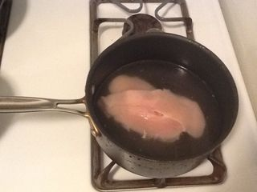
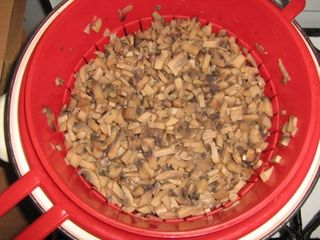
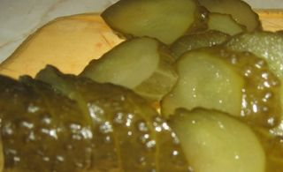
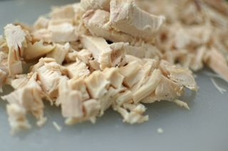
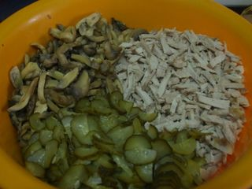
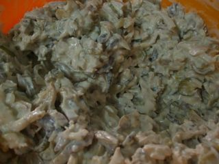

Шаг 1: Отвариваем курицу.

Включаем на плите сильный огонь, ставим кастрюлю на конфорку и наливаем воду. Промываем под холодной проточной водой куриную грудку (если есть кожа, ее нужно удалить), и как только вода в кастрюле закипит, добавляем соль, выкладываем курицу и сбавляем огонь. Отвариваем 25 - 30 минут до полной готовности.
Шаг 2: Отвариваем грибы.

А пока варится курица, подготовим грибы. Шампиньоны промываем под проточной водой, насухо вытираем кухонными полотенцами или салфетками, укладываем на разделочную доску и красиво нарезаем средними кубиками или кусочками произвольной формы около 1 - 2 см.
Ставим на соседнюю конфорку кастрюлю с водой, включаем сильный огонь и ждем когда жидкость закипит. После чего посыпаем солью и перекладываем измельченные грибы. Варим их около 7 минту на слабом огне. Затем скидываем шампиньоны в дуршлаг, отряхиваем от лишней воды и укладываем на бумажные кухонные полотенца или салфетки, чтобы шампиньоны не стали водянистыми.
Шаг 3: Измельчаем ингредиенты.

Маринованные огурцы нарезаем на разделочной доске либо красивым кубиком, либо брусочками, либо дольками.

Курицу также можно нарезать небольшими брусочками, кубиками или кусочками главное - чтобы в салате присутствовал один вид нарезки.
Шаг 4: Заправляем салат.

Теперь выкладываем в большую тарелку или салатницу грибы, курицу, огурцы и тщательно перемешиваем.

Затем добавляем сметану, майонез, черный молотый перец, соль и вновь перемешиваем столовой ложкой до однородности (количество сметаны и майонеза регулируйте по собственному вкусу).